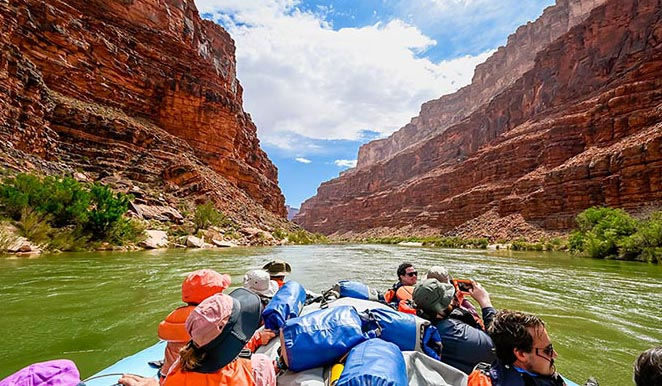
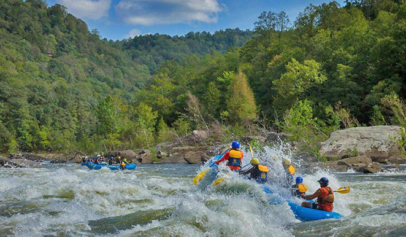
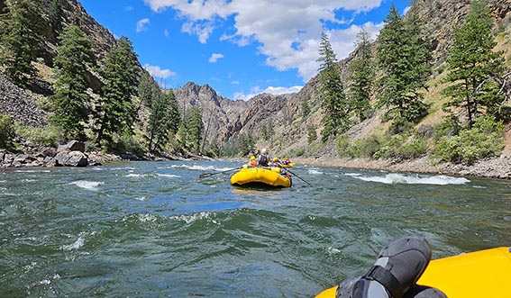

Discover breathtaking destinations on every trip we offer

Colorado River
The quintessential rafting destination, the Colorado River winds for 277 miles through the
awe-inspiring Grand Canyon,
offering a unique view of the stunning scenery and unique geology. Rafters encounter massive Class V
rapids, big waves,
and deep canyons.

Gauley River
Ranked as one of the world's top spots for whitewater rafting, the Gauley is famous for its
"Big 5" on the upper
section, featuring more Class IV and V rapids than any other eastern U.S. river. The raging river is
a result of a
scheduled water release from the Summersville Dam.

Middle Fork Salmon River
Regarded as one of the best wilderness whitewater trips globally, the free-flowing Middle
Fork has it all: clear water,
numerous hot springs, and spectacular canyons. The 105-mile trip features around 100 exciting Class
III and intense IV
rapids in a remote setting.
Available Trips
Destination
State
Difficulty
Length
Description
Colorado River
Arizona
Class V
277 miles
A world-famous rafting route through the Grand Canyon, featuring huge rapids,
towering cliffs, and dramatic desert landscapes.
Gauley River
West Virginia
Class IV–V
26 miles
Known for its “Big 5” rapids and powerful dam-release flows, the Gauley offers
some of the most intense whitewater on the East Coast.
Middle Fork of the Salmon River
Idaho
Class III–IV
105 miles
A legendary wilderness trip with hot springs, clear water, steep canyons,
and over 100 rapids in a remote natural setting.